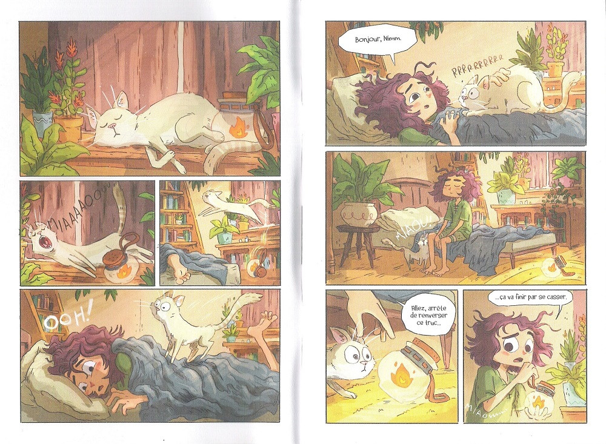

Lightfall (T-1,2,3)
Tim Probert, depuis 2021
Pour le moment trois tomes de ce roman graphique sont sortis. On y suit les aventures de Béa et de Cad dans le monde d'Irpa, un monde où le soleil naturel n'existe plus. Un matin alors que le grand-père de Béa part en laissant seulement un message, la jeune fille et son nouvel ami décide de partir à sa recherche. Une quête iniatique dans un monde merveilleux.
Le monde d'Irpa et ses habitants sont vraiment incroyables. C'est un endroit rêvé (au départ en tout cas, car on se rend compte des vices de certains de ses habitants surtout dans le passé). J'ai vraiment aimé être transporté dans cet univers et je ne demande qu'une seule et unique chose : y retourner et suivre la suite des aventures de toute la troupe.
Retour à l'accueil